Raccoon at the waterline.
SOURCE HEAD TURN NEEDS REPAIR
Eight moments, fully assembled.
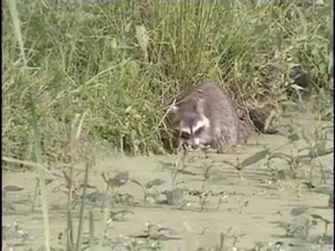

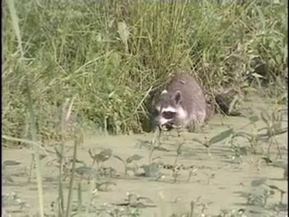
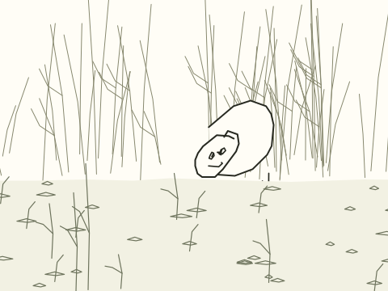
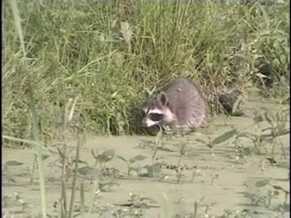
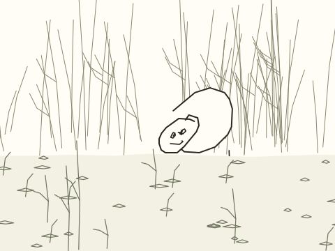
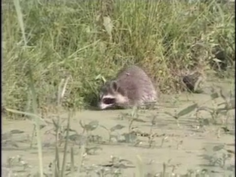
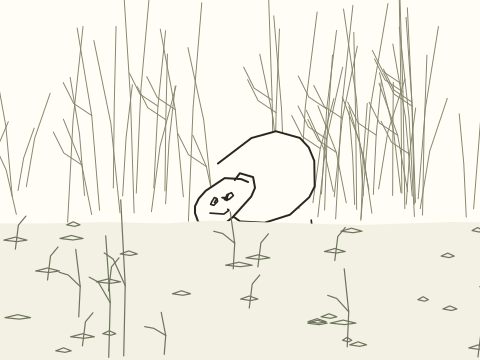
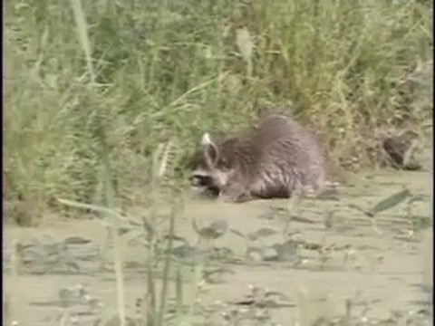
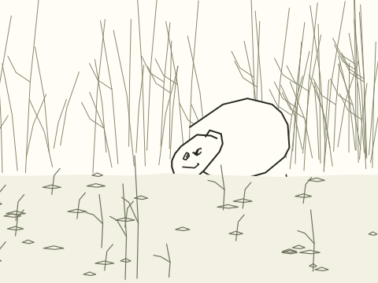
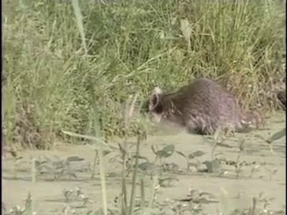
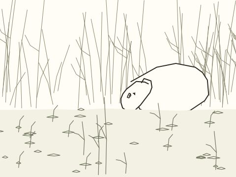
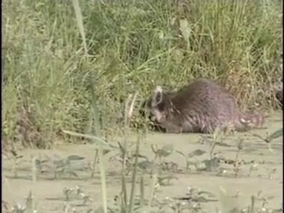
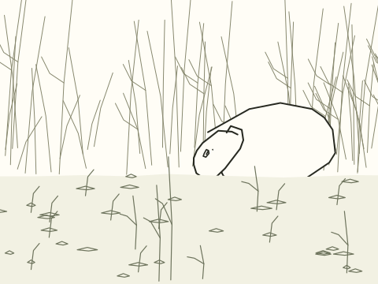
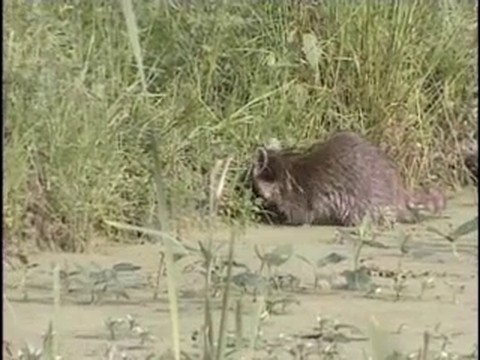
References and review
Quick, Draw! key 5643141870780416. Quick, Draw! contributors / Google Creative Lab, CC BY 4.0. Original fourteen-stroke drawing drives the head, body, feet and tail. Background and foreground drawn once by agent.
Archive: Muscatatuck National Wildlife Refuge (2005), clip-relative 10.8108–13.5802 s. Rights were not provided in the candidate manifest.
Timeline and source anchors · Assembly checks · Independent review · Original doodle

Head/body anchors are manually observed at eight source frames; intervening poses use a shared topology. Camera translation comes from sequential background optical flow. SAM, recognition and numeric source mask fit have not run. No training ran. This is not a release-approved result.